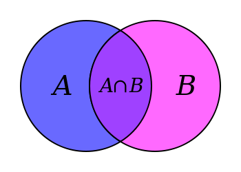

Data Structures in PHP
Where I Work
Questions or Feedback?
- Ask questions during or after the session
- Contact me: http://matthewturland.com/contact
- Leave feedback: https://joind.in/talk/12084
Slides
Linked from either of these:
Goals
- Learn about data structures and related terminology at a conceptual level
- Review concrete examples of concepts using PHP code
- Discuss practical applicability of concepts both within and without PHP
Non-Goals
- Learning PHP basics
- Learning PHP OOP fundamentals
Slides or video from php[world] 2014 tutorial
SPL
The Standard PHP Library (SPL) is a collection of interfaces and classes that are meant to solve common problems.PHP Manual
Ardent
A Library of Collections for OO ProgrammingArdent README
Lead Developer: Levi Morrison
equip/structure
Simple, immutable data structuresGitHub Repository
Lead Developer: Woody Gilk
spl-benchmarks
A suite of tests comparing performance of PHP SPL data structures to PHP arraysspl-benchmarks README
Author: Me
Design Patterns
A design pattern in... computer science is a formal way of documenting a solution to a design problem...Wikipedia
Data Structures
In computer science, a data structure is a particular way of organizing data in a computer so that it can be used efficiently.Wikipedia
Efficiency
- Minimal execution time
- Minimal use of storage
- With respect to code design
Collections
In computer science, a... collection is a grouping of... data items... that have some shared significance... and need to be operated upon together...Wikipedia
Containers
In computer science, a container is... a data structure... used for storing objects in an organized way following specific access rules.Wikipedia
Arrays
In computer science, an... array is a data structure consisting of... elements... each identified by at least one array index or key...Wikipedia
PHP Arrays
An array in PHP is actually an ordered map... that associates values to keys... optimized for several different uses... an array, list (vector), hash table... stack, queue... trees...PHP Manual
Semi-related note:array_*() functions work only on PHP arrays
PHP Arrays
$characters = [
'Tyrion',
'Varys',
'Arya',
'Jaqen',
];
$author = [
'name' => 'George R. R. Martin',
'age' => 65,
'dob' => new \DateTime('1948-09-20'),
'home' => 'Sante Fe, NM',
];
SPL: ArrayObject
- Limited object wrapper for native arrays
- Implements
ArrayAccess,Countable,IteratorAggregate, andSerializable - Use case: when you need to use an array as an object and don't want to roll your own
SPL: ArrayObject
$characters = new \ArrayObject(['Melisandre']);
$characters[] = 'Stannis';
$characters[2] = 'Brienne';
$characters->append('Podrick');
$characters->natsort();
Random Access
In computer science, random access (more precisely... direct access) is the ability to access an item of data at any given coordinates in a population of addressable elements.Wikipedia
Random Access
$author = [
'name' => 'George R. R. Martin',
'age' => 65,
'dob' => new \DateTime('1948-09-20'),
'home' => 'Sante Fe, NM',
];
// Random access
echo $author['home'], \PHP_EOL;
echo $author['name'], \PHP_EOL;
// Sequential access
foreach ($author as $key => $value) {
echo $key, ' - ', $value, \PHP_EOL;
}
Associative Arrays
In computer science, an associative array, map, ... or dictionary is... a collection of (key, value) pairs, such that each possible key appears just once...Wikipedia
Use case: storing an unknown number of elements for random or sequential access by unique key
Associative Arrays
$characters = [
'name' => 'Theon',
'name' => 'Ramsay',
];
var_dump($characters);
array(1) {
'name' =>
string(6) "Ramsay"
}
Hash Tables
In computing, a hash table (hash map) is... used to implement an associative array... A hash table uses a hash function to compute an index into an array... from which the correct value can be found.Wikipedia
Hash Table
echo $array['John Smith']; // 521-8976
Hash Tables in PHP
- PHP arrays incur overhead from use of a hash function and from being resized as allocated memory blocks are exceeded
- PHP's new hashtable implementation by Nikita Popov AKA nikic, circa 2014-12-22
Hash Tables in PHP
echo memory_get_usage(),PHP_EOL;
$a = [];
do {
echo memory_get_usage(),PHP_EOL;
$a[] = count($a);
} while (count($a) < 11);
count($a) |
memory_get_usage() |
diff |
|---|---|---|
| - | 235600 | 0 |
| 0 | 235856 | 256 |
| 1 | 236072 | 216 |
| 2 | 236208 | 136 |
| 3 | 236344 | 136 |
| ... | ||
| 8 | 237024 | 136 |
| 9 | 237224 | 200 |
| 10 | 237360 | 136 |
| ... | ||
Hash Tables in the Wild
- memcached is a server for an in-memory hash table, or key-value store
- Redis is similar to memcached, but has additional capabilities and is often referred to as a data structure server
- There are many other key-value stores; these are just two well-known ones
Ardent: Map
Extends ArrayAccess, Countable, and IteratorAggregate
// equivalent to ArrayAccess::offsetGet()
function get($key);
// equivalent to ArrayAccess::offsetSet()
function set($key, $value);
// equivalent to ArrayAccess::offsetUnset()
function remove($key);
Ardent: HashMap
- Implements
Map - Uses a PHP array for storage with a configurable hash function (so two hash functions are used)
- Hash function used by default
- Equal non-object values resolve to same hash
- Object hashes vary by instance
Ardent: SortedMap
Enumerated Arrays
An enumeration is a complete, ordered listing of all the items in a collection.Wikipedia
Enumerated Arrays in PHP
- When no array keys are specified, PHP uses consecutive integers beginning at
0(zero) - These are referred to as enumerated arrays
- Internally, they're no different from other (i.e. associative) PHP arrays
Enumerated Arrays
$characters = [
0 => 'Petyr',
1 => 'Catelyn',
2 => 'Lysa',
3 => 'Sansa',
];
$characters = [
0 => 'Lysa',
0 => 'Sansa',
];
var_dump($characters);
array(1) {
0 =>
string(5) "Sansa"
}
Dynamically Allocated Arrays
In computer science, ... a dynamically allocated array... is an array whose size is fixed when the array is allocated.Wikipedia
Use case: storing a predetermined number of ordered elements for random or sequential access by position
SPL: SplFixedArray
- Dynamically allocated enumerated array
- Requires an explicit initial size upon instantiation
- Supports resizing, but at the cost of overhead
- Implements
ArrayAccess,Countable, andIterator
SplFixedArray
$characters = new \SplFixedArray(4);
$characters[0] = 'Joffrey';
$characters[1] = 'Robert';
$characters[2] = 'Drogo';
$characters[3] = 'Ned';
$characters[4] = 'Robb';
PHP Fatal error: Uncaught exception 'RuntimeException'
with message 'Index invalid or out of range'
$characters->setSize(5); /* Avoid doing this */
$characters[4] = 'Robb';
Vectors
In computer science... a one-dimensional array.Wikipedia
Ardent: Vector
- Implements
ArrayAccess,Countable, andIteratorAggregate - Uses a PHP array internally for storage
- Includes more methods equivalent to
array_*()functions thanArrayObjectrelated to non-sorting modifications
Ardent: Vector
function appendAll(\Traversable $traversable);
function append($item);
function removeItem($object);
function apply(callable $callable);
function map(callable $map): Vector;
function reduce($initialValue, callable $combine): Vector;
function filter(callable $filter): Vector;
function limit(int $n): Vector;
function skip(int $n): Vector;
function slice(int $start, int $count): Vector;
function keys(): Vector;
Linked Lists
In computer science, a linked list is a data structure consisting of a group of nodes which together represent a sequence.Wikipedia
Use case: storing and accessing an unknown number of ordered elements sequentially
Linked Lists vs Hash Tables
- Pro: dynamic size without hash function overhead
- Con: random access is less efficient
- Con: random insertion is less efficient

SPL: SplDoublyLinkedList
- Implements a doubly-linked list that allows for forward and reverse iteration
- Implements
ArrayAccess,Countable, andIterator
function unshift($value);
function push($value);
function add($index, $newval);
function shift();
function pop();
function top();
function bottom();
SPL: SplDoublyLinkedList
- Favor iteration over random access
- Add: use
unshift()orpush()vsadd() - Remove: use
shift()orpop() - Access: use
top()orbottom()
Ardent: LinkedList
- Implements a doubly-linked list
- Implements
ArrayAccess,Countable, andIterator
Ardent: LinkedList
function unshift($value);
function push($value);
function insertBefore(int $position, $newval);
function insertAfter(int $position, $newval);
function shift();
function pop();
function first();
function last();
function seek(int $position);
function indexOf($value, callable $f = null): int;
function contains($value, callable $f = null): bool;
Ardent: LinkedList
- Favor iteration over random access
- Add: use
unshift()orpush()vsinsertBefore()/insertAfter() - Remove: use
shift()orpost() - Access: use
first()orlast()vsseek() - Avoid using
indexOf()orcontains()
Stacks
Credit: @ninjagrl
Stacks
In computer science, a stack... is... a collection of elements, with two principal operations: 1) push adds an element to the collection; 2) pop removes the last element that was added.Wikipedia
Use case: storing an unknown number of elements where only the latest element stored is accessible
Using Stacks
- Stacks are basically linked lists where elements are only added and removed from the front, called the top of the stack
- Useful for avoiding recursion in situations that require backtracking, such as parsing and searching / traversing trees -- more on those later
SPL: SplStack
- Extends
SplDoublyLinkedList setIteratorMode()provides support for removing elements or not during iteration- Limited to LIFO iteration order
SPL: SplStack
$stack = new \SplStack;
$stack->push('Cersei');
$stack->push('Jamie');
$stack->push('Tywin');
var_dump($stack->pop());
var_dump($stack->pop());
var_dump($stack->bottom());
var_dump($stack->pop());
string(5) "Tywin"
string(5) "Jamie"
string(6) "Cersei"
string(6) "Cersei"
Ardent: LinkedStack
- Implements
CountableandIteratorAggregate - Uses a singly-linked list internally for storage
Ardent: LinkedStack
$stack = new Collections\LinkedStack;
$stack->push('Cersei');
$stack->push('Jamie');
$stack->push('Tywin');
var_dump($stack->pop());
var_dump($stack->pop());
var_dump($stack->last());
var_dump($stack->pop());
string(5) "Tywin"
string(5) "Jamie"
string(6) "Cersei"
string(6) "Cersei"
Queues
In computer science, a queue is a... collection in which the... operations... are the addition of entities to the rear terminal position, known as enqueue, and removal of entities from the front terminal position, known as dequeue.Wikipedia
Use case: storing an unknown number of elements where only the element added earliest is accessible
Using Queues
- Queues are basically linked lists where elements are only added to the back of the list (enqueue) and removed from the front of the list (dequeue)
- Useful for prioritization or scheduling of tasks based on the order in which they're added
Queueing Theory
Queueing theory is the... study of waiting lines, or queues... so that queue lengths and waiting time can be predicted.Wikipedia
Queueing Theory Illustrated
SPL: SplQueue
- Extends
SplDoublyLinkedList setIteratorMode()provides support for removing elements or not during iteration- Limited to FIFO iteration order
enqueue()anddequeue()aliaspush()andshift()respectively
SPL: SplQueue
$queue = new \SplQueue;
$queue->enqueue('Viserys');
$queue->enqueue('Daenerys');
$queue->enqueue('Jon');
var_dump($queue->dequeue());
var_dump($queue->dequeue());
var_dump($queue->top());
var_dump($queue->dequeue());
string(7) "Viserys"
string(8) "Daenerys"
string(3) "Jon"
string(3) "Jon"
Ardent: LinkedQueue
- Implements
CountableandIteratorAggregate - Uses a singly-linked list internally for storage
Ardent: LinkedQueue
$queue = new Collections\LinkedQueue;
$queue->enqueue('Jorah');
$queue->enqueue('Barristan');
$queue->enqueue('Daario');
var_dump($queue->dequeue());
var_dump($queue->dequeue());
var_dump($queue->first());
var_dump($queue->dequeue());
string(5) "Jorah"
string(9) "Barristan"
string(6) "Daario"
string(6) "Daario"
Priority Queues
In computer science, a priority queue is... like a regular queue... but where... each element has a "priority"... an element with high priority is served before an element with low priority.Wikipedia
Use case: storing an unknown number of elements with associated priorities where only the highest priority most recently added element is accessible
SPL: SplPriorityQueue
- Implements
CountableandIterator - Does not extend
SplQueue - Uses
insert()/extract()rather thanenqueue()/dequeue() - Priority values can be anything, including objects
- Read MWOP's Taming SplPriorityQueue and check out Enrico's FastPriorityQueue library
- Uses a max heap internally -- more on those later
SPL: SplPriorityQueue
$queue = new \SplPriorityQueue;
$queue->insert('value1', 'priority0');
$queue->insert('value2', 'priority1');
$queue->insert('value0', 'priority2');
var_dump($queue->extract());
var_dump($queue->extract());
var_dump($queue->extract());
string(6) "value0"
string(6) "value2"
string(6) "value1"
Priority Queues in the Wild
- Job queues implement this structure
- Check out Bernard
Graphs
In computer science, a graph is... a finite... set of nodes or vertices, together with... pairs of these nodes... known as edges.Wikipedia
No SPL or Ardent implementations; see graphp
Use case: modeling relationships between objects
Graph Theory
In mathematics and computer science, graph theory is the study of graphs... to model pairwise relations between objects.Wikipedia
Directed Graphs
In... graph theory, a directed graph (or digraph) is a graph... where the edges have a direction associated with them.Wikipedia
Cycle Graph
In graph theory, a cycle graph or circular graph is a graph that consists of... some number of vertices connected in a closed chain.Wikipedia
graphp
{
"require": {
"graphp/graph": "^0.7"
}
}
use Fhaculty\Graph\Graph;
$graph = new Graph;
$rome = $graph->createVertex('Rome');
$madrid = $graph->createVertex('Madrid');
$cologne = $graph->createVertex('Cologne');
$cologne->createEdgeTo($madrid);
$madrid->createEdgeTo($rome);
$rome->createEdgeTo($rome);
foreach ($rome->getVerticesEdgeFrom() as $vertex) {
echo $vertex->getId(), ' leads to Rome', \PHP_EOL;
}
Mandrid leads to Rome
Rome leads to Rome
Graphs in the Wild
- Neo4J graph database
- Graph Story, a Neo4J company
- Michelle Sanver's talk on Neo4J
Trees
In... graph theory, a tree is an undirected graph in which any two vertices are connected by exactly one path... without... cycles...Wikipedia

Trees
In computer science, a tree is a... data structure... with a root value and subtrees of children...Wikipedia

Trees in PHP
Binary Trees
In computer science, a binary tree is a tree... in which each node has at most two children.Wikipedia
Ardent: BinaryTree
Tree example from earlier:
use Collections\BinaryTree as T;
$nine = new T(9);
$nine->setLeft(new T(4));
$five = new T(5);
$five->setRight($nine);
$two = new T(2);
$two->setRight($five);
$eleven = new T(11);
$six = new T(6);
$eleven->setLeft(new T(5));
$eleven->setRight(new T(11));
$seven = new T(7);
$seven->setLeft(new T(2));
$seven->setRight($six);
Binary Search Trees
In computer science, binary search trees (BST)... store data items, known as keys, and allow fast insertion and deletion of such keys, as well as checking whether a key is present in a tree.Wikipedia
AVL Trees
In computer science, an AVL tree... is a self-balancing binary search tree.Wikipedia
Ardent: AvlTree
Implements Countable and IteratorAggregate
function __construct(callable $comparator = null);
function add($element);
function remove($element);
function contains($item): bool;
Heaps
In computer science, a heap is a specialized tree-based data structure that satisfies the heap property: if A is a parent node of B then... A is ordered with respect to... B...Wikipedia
Use case: storing an unknown number of elements ordered based on a comparator function as applied to those elements
Using Heaps
Useful for sorting elements
with minimal reordering as more are added

SPL: SplHeap
SPL: SplMinHeap
- Subclass of
SplHeap - Smallest element is removed first
$heap = new \SplMinHeap;
$heap->insert(3);
$heap->insert(2);
$heap->insert(1);
foreach ($heap as $n) {
var_dump($n);
}
var_dump(count($heap));
int(1)
int(2)
int(3)
int(0)
SPL: SplMaxHeap
- Subclass of
SplHeap - Largest element is removed first
$heap = new \SplMaxHeap;
$heap->insert(1);
$heap->insert(2);
$heap->insert(3);
foreach ($heap as $n) {
var_dump($n);
}
var_dump(count($heap));
int(3)
int(2)
int(1)
int(0)
Sets
In computer science, a set... can store certain values, without any particular order, and no repeated values... rather than retrieving a specific element... one typically tests a value for membership...Wikipedia
Set Theory
Set theory is the branch of mathematical logic that studies sets.Wikipedia

Set Operations
- Union
- all unique items across multiple sets
- Intersection
- items common to multiple sets
- Difference
- items not common to multiple sets
- Complement
- items contained in one set and not others
- Cartesian Product
- all possible pairings of items from two sets
SPL: SplObjectStorage
- Works as a set and a composite hash map
- Only stores objects, but other values can be typecasted
- Implements
ArrayAccess,Countable,Iterator, andSerializable
SPL: SplObjectStorage
- Use
attach()anddetach()to add and remove elements addAll(),removeAll(), andremoveAllExcept()(in PHP >= 5.3.6) perform the union, complement, and intersection set operations respectively
Typecasting for SplObjectStorage
$bran = (object) 'Bran';
$hodor = (object) 'Hodor';
$osha = (object) 'Osha';
$a = new \SplObjectStorage;
$a->attach($bran);
$a->attach($hodor);
$b = new \SplObjectStorage;
$b->attach($hodor);
$b->attach($osha);
Union with SplObjectStorage
/* $a = ['Bran', 'Hodor']; $b = ['Hodor', 'Osha']; */
$union = clone $a;
$union->addAll($b);
echo implode(PHP_EOL, array_map(
function($o) { return $o->scalar; },
iterator_to_array($union)
));
Bran
Hodor
Osha
Complement with SplObjectStorage
/* $a = ['Bran', 'Hodor']; $b = ['Hodor', 'Osha']; */
$complement = clone $a;
$complement->removeAll($b)
echo implode(PHP_EOL, array_map(
function($o) { return $o->scalar; },
iterator_to_array($complement)
));
Bran
Intersection with SplObjectStorage
/* $a = ['Bran', 'Hodor']; $b = ['Hodor', 'Osha']; */
$intersection = clone $a;
$intersection->removeAllExcept($b);
echo implode(PHP_EOL, array_map(
function($o) { return $o->scalar; },
iterator_to_array($intersection)
));
Hodor
Difference with SplObjectStorage
/* $a = ['Bran', 'Hodor']; $b = ['Hodor', 'Osha']; */
$intersection = clone $a;
$intersection->removeAllExcept($b);
$union = clone $a;
$union->addAll($b);
$difference = clone $union;
$difference->removeAll($intersection);
echo implode(PHP_EOL, array_map(
function($o) { return $o->scalar; },
iterator_to_array($difference)
));
Bran
Osha
Ardent: Set
- Implements
CountableandIteratorAggregate HashSetimplementsSetusing a hash mapSortedSetimplementsSetusing a BST
function add($item);
function has($item): bool;
function remove($item);
function difference(Set $that): Set;
function intersection(Set $that): Set;
function complement(Set $that): Set;
function union(Set $that): Set;
Sets in the Wild
- SQL
JOINs are somewhat analogous to a limited Cartesian product of two sets - Some SQL dialects also support the union, intersection, and difference set operations
That's All, Folks
- Questions? Comments? Discussion?
- wheniwork.com
- matthewturland.com for slides
- E-mail: me@matthewturland.com
- Twitter: @elazar
- Github: elazar
- Freenode: Elazar
Feedback
Please rate my talk!
Also, check out the joind.in mobile apps!